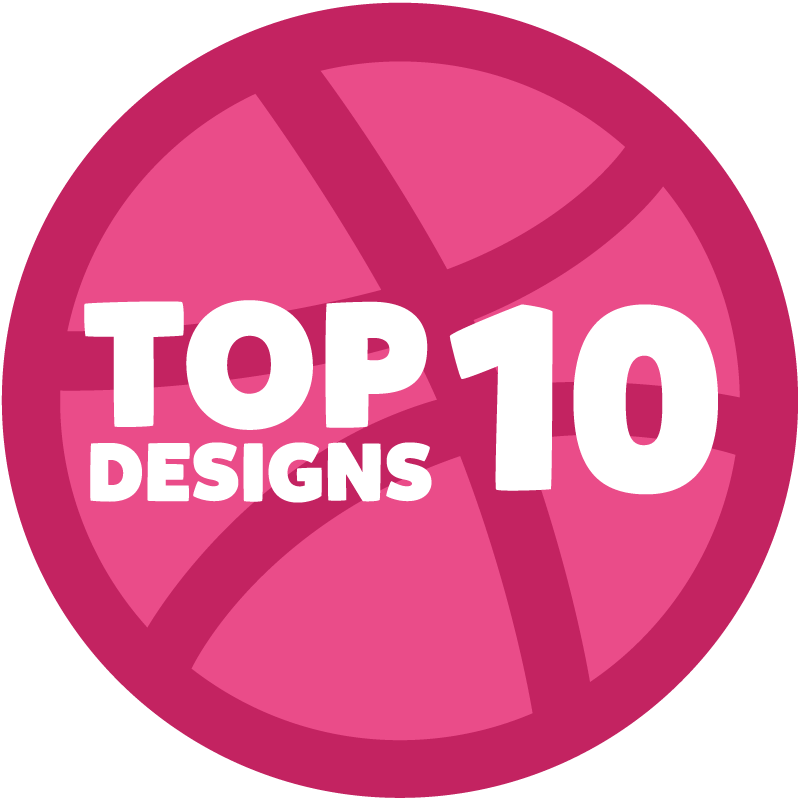

<!DOCTYPE html>
<html lang="en">
  <title>Project One</title>
  <!-- Charset-->
  <meta charset="utf-8">
  <!-- Viewport meta-->
  <meta name="viewport" content="width=device-width initial-scale=1.0">
  <!-- Normalize CSS-->
  <link rel="stylesheet" href="https://cdnjs.cloudflare.com/ajax/libs/normalize/5.0.0/normalize.min.css">
  <!-- Ionic Icons-->
  <link rel="stylesheet" href="http://code.ionicframework.com/ionicons/2.0.1/css/ionicons.min.css">
  <!-- Google Fonts "Roboto"-->
  <link rel="stylesheet" href="//fonts.googleapis.com/css?family=Roboto:300,300italic,400,700,700italic">
  <!-- Milligram CSS-->
  <link rel="stylesheet" href="//cdn.rawgit.com/milligram/milligram/master/dist/milligram.min.css">
  <!-- Animate CSS-->
  <link rel="stylesheet" href="https://cdnjs.cloudflare.com/ajax/libs/animate.css/3.5.2/animate.min.css">
  <!-- Custom CSS-->
  <link rel="stylesheet" href="styles/main.css">
</html>
<body>
  <!-- Hero Grid-->
  <div class="container">
    <div class="row">
      <div class="column column-30">
        <canvas id="myCanvas"></canvas>
        <!-- Site info (stays fixed)-->
        <div class="site-info"><a class="project-logo" href="#"></a>
          <header class="mini-nav"><a class="filled" href="page1.html">Top 10</a><a class="outline" href="page2.html">Animation</a></header>
          <footer class="mini-footer flex"><a href="https://github.com/meads2/01-Project/tree/master"><i class="ion-social-github"></i></a></footer>
        </div>
      </div>
      <div class="column column-50">
        <section class="section main flex flex-row">
          <div class="about-area">
            <h1 class="main-title"> Project</h1>
            <div class="animated"><i class="ion-chevron-down"></i>
              <p>Scroll Down</p>
            </div>
          </div>
        </section>
        <section class="section" id="challenges">
          <h2>Question</h2>
          <h1>Challenges?</h1>
          <ul>
            <li>Making this layout responsive</li>
            <li>Figuring out a topic</li>
            <li>Working with a lot of plugins</li>
            <li>Making an appealing design</li>
          </ul>
        </section>
        <section class="section" id="interesting">
          <h2>Question</h2>
          <h1>Interesting?</h1>
          <ul>
            <li>Found some new JQuery plugins to enhance designs</li>
            <li>Worked with a new layout</li>
            <li>Created a better user experience</li>
          </ul>
        </section>
        <section class="section">
          <h2>Question</h2>
          <h1>Learned Techniques?</h1>
          <ul>
            <li>Scolling effects</li>
            <li>Some new animations and transitions</li>
            <li>Organizing content</li>
            <li>Better practices for file organization and coding</li>
          </ul>
        </section>
        <section class="section">
          <h2>Question</h2>
          <h1>Resources</h1>
          <ul>
            <li><a href="http://www.dribbble.com">Dribbble</a></li>
            <li><a href="https://projects.lukehaas.me/scrollify/#methods-continued">Scollify JS</a></li>
            <li><a href="https://marcbruederlin.github.io/particles.js/">Particles JS</a></li>
          </ul>
        </section>
        <section class="section">
          <h2>Question</h2>
          <h1>Try and then delete anything?</h1>
          <p>I tried implementing a cool paralax scrolling effect for the content so the background would change slightly different when scrolling. It was not working the way I had hoped so I decided to scrap it and try something else. It was doing weird things on smaller screens and I didn't want to risk breaking the entire project.</p>
        </section>
        <section class="section">
          <h2>Question</h2>
          <h1>How to improve?</h1>
          <p>There are a lot of things I could do to improve this project. I would want to make the site and design more responsive. It looks ok on desktop, but becomes a mess on smaller devices.</p>
          <p>I would have liked to make a better design with some more colors as well as images. I wanted to keep a minimal design, but this might look to minimal.</p>
          <p>Lastly, I wanted to make a bunch of cool little interactions and effects that I could not get to all work together the way I wanted to. I hope to figure them out and use them in a future project.</p>
        </section>
      </div>
    </div>
  </div>
  <!-- Javascript Files-->
  <!-- JQuery-->
  <script src="https://cdnjs.cloudflare.com/ajax/libs/jquery/3.1.1/jquery.min.js"></script>
  <!-- Scrollify-->
  <script src="https://cdnjs.cloudflare.com/ajax/libs/scrollify/1.0.12/jquery.scrollify.min.js"></script>
  <!-- ParticlesJS-->
  <script src="https://npmcdn.com/particlesjs@1.0.2/dist/particles.min.js"></script>
  <!-- Custom jquery-->
  <script src="../js/app.js"></script>
  <!-- Custom Particles JS-->
  <script src="../js/particles.js"></script>
</body>